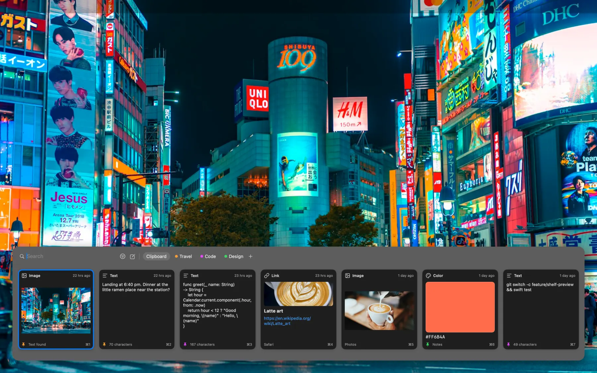

Clipboard history for Mac, iPhone and iPad.
Press Shift-Command-V in any app. Coming to the Mac App Store.
ClipShelf for Mac

Free, with a keyboard for any app.
Get it on the App Store
ClipShelf for iPhone